Stress helpers in MAM and Feldheim Simanim Tanakh
Stress helpers in MAM and Koren Classic Tanakh
The table lists differences among selected readings in prose verses and uses MAM verse numbering.
The completed scan review covers stress helpers already present in MAM’s prose verses. It excludes a search for helpers absent from MAM and optional helpers in poetic verses.
The follow-up resolved all 10,223 pending scan checks across the two editions, counting each occurrence in each edition separately. It found three more differences, all in Koren, and corrected the earlier reading of 2Chr 20:27 in both editions.
The Decalogue comparison uses MAM’s manuscript-tradition תחתון for the Simanim Tanakh’s main Decalogues and its manuscript-tradition עליון for its appendix Decalogues.
The Simanim Tanakh has redundant pashta helpers on thirteen chanted words whose final syllable ends with two consonants bearing sheva. Phonetic MAM places the stress on that same final syllable.
The comparison incorporates the Hebrew Wikisource correction at 2Sam 4:6. Koren, the Simanim Tanakh and corrected MAM have the telisha gedolah helper on the first he in וְ֠הֵ֠נָּה. The checked-in MAM-with-doc text still has the helper on nun. Wikisource correction
| Readings | MAM verse | Difference | Page | Scan crop |
|---|---|---|---|---|
MAMקִ֞֠רְב֞֠וּ the Simanim Tanakhקִ֠רְב֞וּ | Lev 10:4 | Geresh or gershayim + telisha gedolah The Simanim Tanakh has the telisha gedolah on qof and the gershayim on bet. MAM has both signs on both letters. MAM doc-note MAM’s notes describe the two cases where geresh or gershayim and telisha gedolah belong on different letters. MAM notes on telisha gedolah | p. 175 | 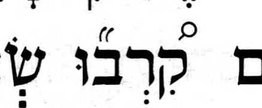 |
MAMשָׁ֩טוּ֩ the Simanim Tanakhשָׁטוּ֩ | Num 11:8 | no SH in the Simanim Tanakh The MAM doc-note gives penultimate stress for MAM and Koren and final stress for the Simanim Tanakh, following Sephardic and Yemenite reading traditions. MAM doc-note | p. 236 | 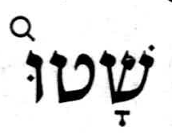 |
MAMוַיֵּבְךְּ֙ the Simanim Tanakhוַיֵּ֙בְךְּ֙ | 2Sam 3:32 | redundant SH in the Simanim Tanakh Phonetic MAM places the stress on the final syllable, which the Simanim Tanakh also marks with the added pashta. Phonetic MAM | p. 511 | 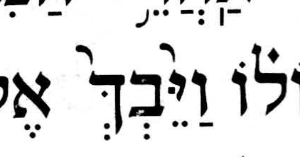 |
MAMאָחִ֘יךְ֮ the Simanim Tanakhאָחִיךְ֮ | 2Sam 13:20 | redundant SH in MAM Phonetic MAM places the stress on the final syllable. The Simanim Tanakh’s postpositive zarqa also indicates final stress. Phonetic MAM | p. 526 | 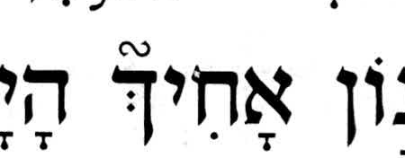 |
MAMוְשָׁפַלְתְּ֙ the Simanim Tanakhוְשָׁפַ֙לְתְּ֙ | Isa 29:4 | redundant SH in the Simanim Tanakh Phonetic MAM places the stress on the final syllable, which the Simanim Tanakh also marks with the added pashta. Phonetic MAM | p. 696 | 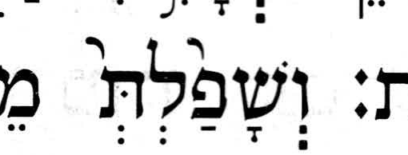 |
MAMאָמַרְתְּ֙ the Simanim Tanakhאָמַ֙רְתְּ֙ | Isa 47:10 | redundant SH in the Simanim Tanakh Phonetic MAM places the stress on the final syllable, which the Simanim Tanakh also marks with the added pashta. Phonetic MAM | p. 719 | 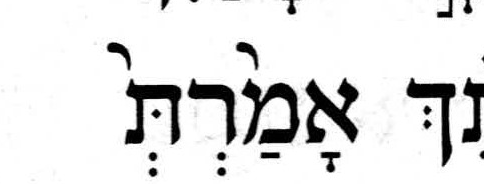 |
MAMוְיָנַקְתְּ֙ the Simanim Tanakhוְיָנַ֙קְתְּ֙ | Isa 60:16 | redundant SH in the Simanim Tanakh Phonetic MAM places the stress on the final syllable, which the Simanim Tanakh also marks with the added pashta. Phonetic MAM | p. 733 | 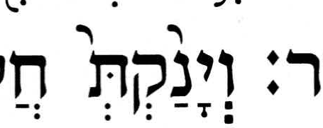 |
MAMיֹשַׁבְתְּ֙ the Simanim Tanakhיֹשַׁ֙בְתְּ֙ | Jer 22:23 | redundant SH in the Simanim Tanakh Phonetic MAM places the stress on the final syllable, which the Simanim Tanakh also marks with the added pashta. Phonetic MAM | p. 777 | 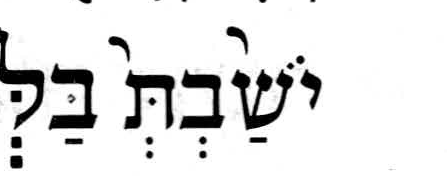 |
MAMמַה־נֵּחַנְתְּ֙ the Simanim Tanakhמַה־נֵּחַ֙נְתְּ֙ | Jer 22:23 | redundant SH in the Simanim Tanakh Phonetic MAM places the stress on the final syllable, which the Simanim Tanakh also marks with the added pashta. Phonetic MAM | p. 777 | 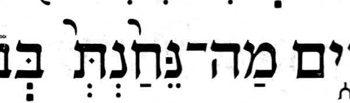 |
MAMוְגַם־נִלְכַּדְתְּ֙ the Simanim Tanakhוְגַם־נִלְכַּ֙דְתְּ֙ | Jer 50:24 | redundant SH in the Simanim Tanakh Phonetic MAM places the stress on the final syllable, which the Simanim Tanakh also marks with the added pashta. Phonetic MAM | p. 829 | 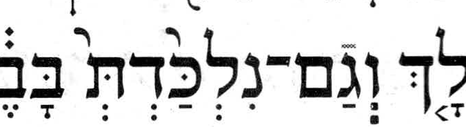 |
MAMשֹׁכַנְתְּ֙ the Simanim Tanakhשֹׁכַ֙נְתְּ֙ | Jer 51:13 | redundant SH in the Simanim Tanakh Phonetic MAM places the stress on the final syllable, which the Simanim Tanakh also marks with the added pashta. Phonetic MAM | p. 831 | 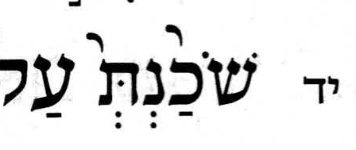 |
MAMלֹֽא־זָכַרְתְּ֙ the Simanim Tanakhלֹֽא־זָכַ֙רְתְּ֙ | Ezek 16:43 | redundant SH in the Simanim Tanakh Phonetic MAM places the stress on the final syllable, which the Simanim Tanakh also marks with the added pashta. Phonetic MAM | p. 863 | 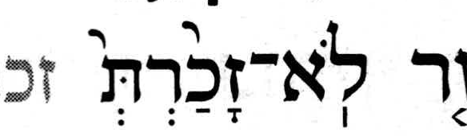 |
MAMפִּלַּלְתְּ֙ the Simanim Tanakhפִּלַּ֙לְתְּ֙ | Ezek 16:52 | redundant SH in the Simanim Tanakh Phonetic MAM places the stress on the final syllable, which the Simanim Tanakh also marks with the added pashta. Phonetic MAM | p. 863 | 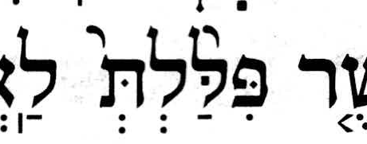 |
MAMוְיָשַׁבְתְּ֙ the Simanim Tanakhוְיָשַׁ֙בְתְּ֙ | Ezek 23:41 | redundant SH in the Simanim Tanakh Phonetic MAM places the stress on the final syllable, which the Simanim Tanakh also marks with the added pashta. Phonetic MAM | p. 878 | 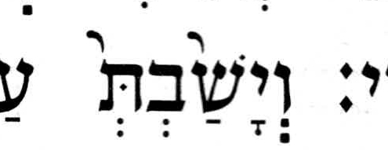 |
MAMוּ֜֠לְאֵ֜֠לֶּה the Simanim Tanakhוּ֠לְאֵ֜לֶּה | Ezek 48:10 | Geresh or gershayim + telisha gedolah The Simanim Tanakh has the telisha gedolah on vav and the geresh on alef. MAM has both signs on both letters. MAM doc-note | p. 921 | 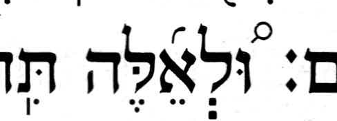 |
MAMוְהָלַכְתְּ֙ the Simanim Tanakhוְהָלַ֙כְתְּ֙ | Ruth 2:9 | redundant SH in the Simanim Tanakh Phonetic MAM places the stress on the final syllable, which the Simanim Tanakh also marks with the added pashta. Phonetic MAM | p. 1228 | 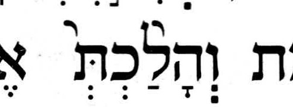 |
MAMוַיֵּשְׁתְּ֙ the Simanim Tanakhוַיֵּ֙שְׁתְּ֙ | Ruth 3:7 | redundant SH in the Simanim Tanakh Phonetic MAM places the stress on the final syllable, which the Simanim Tanakh also marks with the added pashta. Phonetic MAM | p. 1230 | 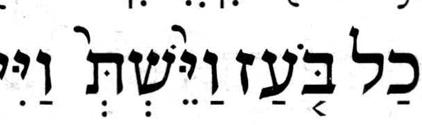 |
MAMוַ֠יָּשֻׁב֠וּ the Simanim Tanakhוַ֠יָּשֻׁ֠בוּ | 2Chr 20:27 | Different SH placement MAM puts the telisha gedolah helper on bet. Koren and the Simanim Tanakh put it on shin. Phonetic MAM marks final stress in Chronicles. Phonetic MAM at 2Chr 20:27 MAM puts the helper on shin in the same pointed form at Gen 14:7, and Phonetic MAM marks stress on the syllable beginning with shin. The helper on bet in Chronicles is likely a MAM error. Phonetic MAM at Gen 14:7 | p. 1432 | 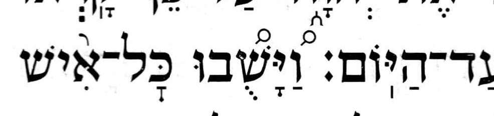 |


Torah Nevi’im Ketuvim Simanim, Elḥanan Yosef edition, Jerusalem 5775. © 5783 Shmuel Meir Riachi and Feldheim Publishers. The crops document the printed readings shown in the table.
MAM text from MAM-with-doc, based on Miqra according to the Masorah at Hebrew Wikisource, CC BY-SA 4.0.